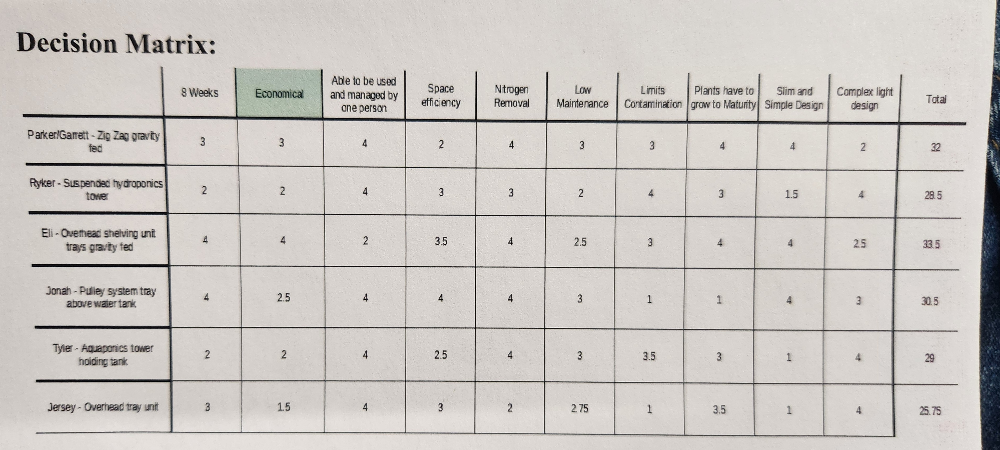
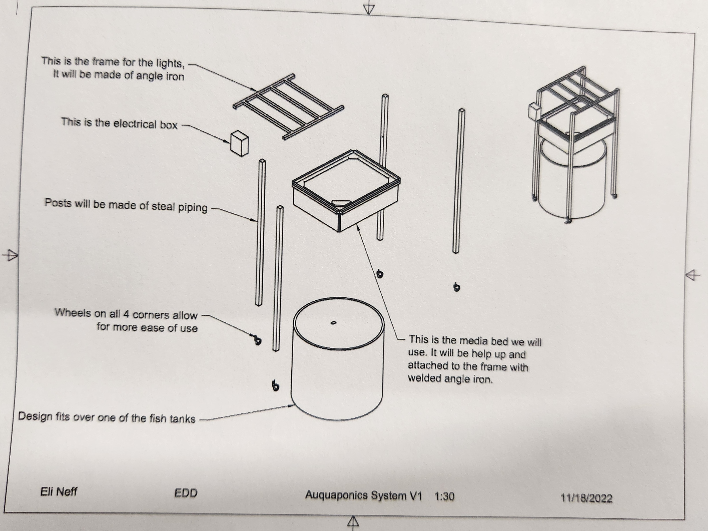
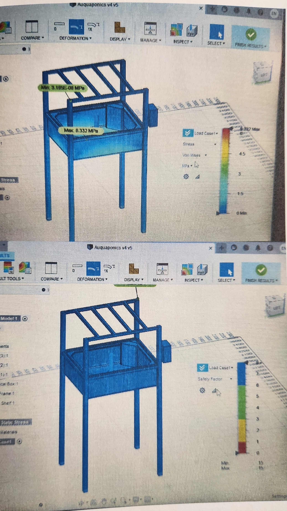
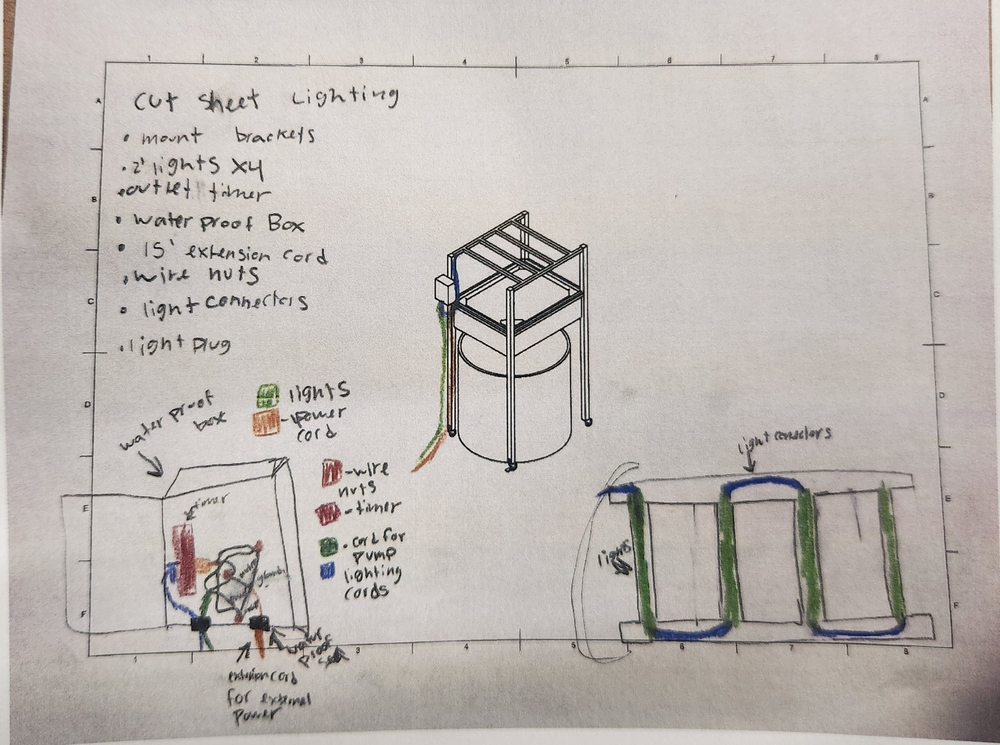
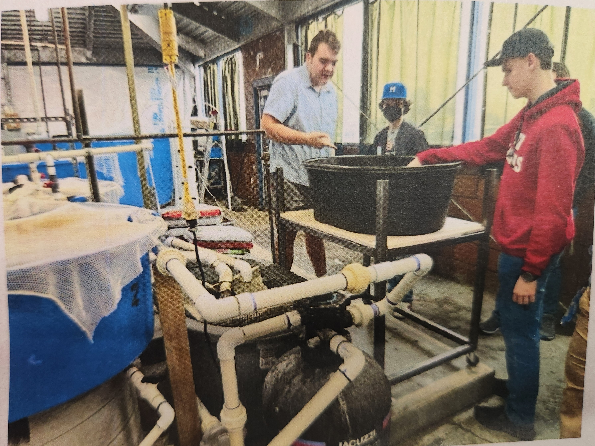
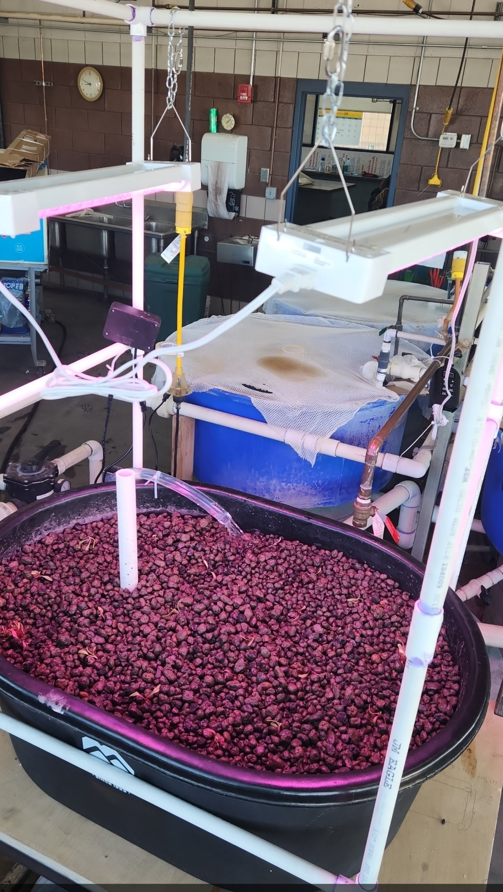

*The only documentation I had left from this project was CAD models and a copy of the printed brief delivered to the customer, hence many images are pictures of other printed images.
Problem
Fremont High School runs aquacultural classes, including running their own small trout farm. This farm's largest problem is nitrogen build up due to waste from the fish, and they asked us to recycle that nitrogen as fertilizer in an aquaponics system, allowing the school to also grow plants as part of their classes, and eliminate the required filtering for the fish.
Important criteria and constraints
-
The system must fit in the space allotted without interfering with normal
aquacultural work.
- To accomplish this goal, I made a quick 3d model of the allotted space after visiting.
-
The system must be able to operate without overwhelming the rooms electrical
systems, and without major upkeep.
- This ended up being a fairly easy criteria to stay within, but also meant being limited in the quantity and quality of water pumps we used.
Research and Design
The first, and frankly primary, hurdle for this project was gaining understanding of aquaponics as a science.
After some basic research from the team, we decided many forms of aquaponics, like flotillas or pure hydroculture, weren't applicable to this project, and we would need some sort of media bed.

After initial designs and a decision matrix (above) my design was selected, 3d modeled, and made into manufacturable and understandable drawings for the customer (below).

This design was also tested using Fusion 360's FEA simulations (below) to ensure our selected materials and processes would be capable of holding the large weight of water needed without any risk to the customer's current equipment.

Finally, we sketched out our electronics (below) to make a final materials and costs sheet.

After meeting with the customer, he informed us of several previously unknown constraints that made this design fail.
- Due to the circulation system for the fish tanks, in order to properly filter the entire system, water could not be pumped out of any fish tank, but instead must be pumped from the shared circulatory tank.
- The workable area of the design would have to be lowered significantly to allow shorter students to access it, as no students are allowed on stepladders in the class.
- The circulatory tank our system needs to pump from must be accessible without disassembling either system.
- The current cost of materials was too high.
- The selected grow bed would not arrive by the product deadline.
This was obviously quite a blow to what we felt was a great original design, but we determined to take a minimal-change approach to bring our design into coherence with these new constraints without using unnecessary engineering man-hours.
Many of these changes led into one another and worked on multiple fronts:
- We worked hard to find a trough at a local farm supply store with the same dimensions for its lip as the original grow bed. This new container was cheaper, and could use the same support structure already designed, meaning we didn't need to spend more tokens on simulating a new design, or spend time on restructuring our model.
- We decided to remove the steel structure as support for our grow-lights and use a pvc pipe frame instead. This cut costs significantly, and reduced weight enough that the design would be movable when put on lockable casters.
- With the design now movable, we lowered the design significantly. This meant it entirely covered the tank when in place, but allowed for frequent enough access when moved.
We contacted the customer with our changes and estimated cost, reached out to a local botanist for final verification of our growing method, and got the go-ahead from both to start construction.
Build
We contracted out the welding of our steel frame while we set to work building our pvc lighting frame and wiring electronics.
Our lights were highly efficient, and we got the whole system (including the pump) running on just two electrical outlets, well within our criteria.
Once our metal frame was done, we took all our components on-site (below). Getting the casters on and the upper and lower halves of the frames assembled was easy.
The only real issues we had from our design were from the plumbing.

Our very first concept design had a shallow layer of media, and was drained by gravity having the whole media bed on a tilt. This was decided against for a number of reasons, mostly our welders input on structural integrity, and sourcing for a media bed.
That left us with the only other usable aquaponics model for our design being the intermittent-flood model. Our new plan was to have the pump pump water into the bottom of the media bed, and have it intermittently dump with a bell siphon. This would have worked, but the suction of the bell siphon was cut off by the mesh we used at it's opening end to avoid dumping our grow media into the fish tank system.
Instead, we had to improvise and cut off our bell siphon for a completely new aquaponics model we were hoping would work that involved constantly flooding our media bed.
We pumped water up from the bottom and then fine-tuned the position of the drain pipe to let water out at the same rate and allow the level to stabilize around the top of the media whilst still continuously flowing.
The final issue we had was our clay media balls. We forgot to wash them before running the system, and had to dump the entire load of water as it couldn't be returned to the fish tanks. Luckily, the system's siphon was closed when we first filled it, or this would have been a serious filtering issue for the fish tanks. This also meant we had to go through our excruciating out-flow optimization process twice.
Finally, though, our system was complete and functional on at least a basic level.

Results
Overall, this project was a near-failure. The system was somewhat functional, and did meet the criteria and constraints given. However, the time and resources would almost certainly have been better-spent adapting and customizing a commercial solution.
What went wrong:
- The amount of work and money invested in this project was slightly comical. It was partially funded by the school, and work was done by us high-school engineering students. If not for both of those things, no customer would be satisfied with the value to cost ratio of our work.
- The fish tanks still required additional filtering. Our system did grow plants, but not many, and not super well. The main problem here was simply that our media bed was VERY deep for what was a single top layer of growable space.
What went well:
- Our system actually grew plants! This is the biggest success by far. Our constant-flood system was genuinely innovative. From our research there was no product using that growing model and it grew plants without causing enough stress to kill them.
- Our customer was satisfied with the product system, and it fit all of the strictly necessary criteria and constraints.
Most valuable, this was an incredible learning experience. I have made huge and really helpful changes to my engineering process since:
- I now research whatever I am deciding to build dramatically more in the early phase. As obvious as it sounds, things only tend to work if you build them in a way that works.
- I ask the customer as many questions as I can, especially what is and is not negotiable, and the context whatever im designing will be in.
- Some things aren't worth using an engineer, and you should buy something already available.